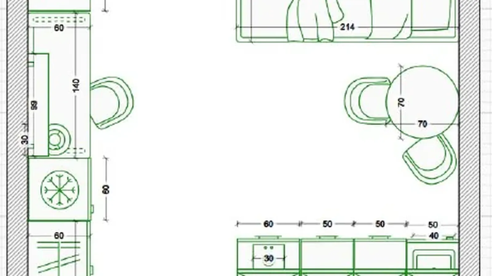
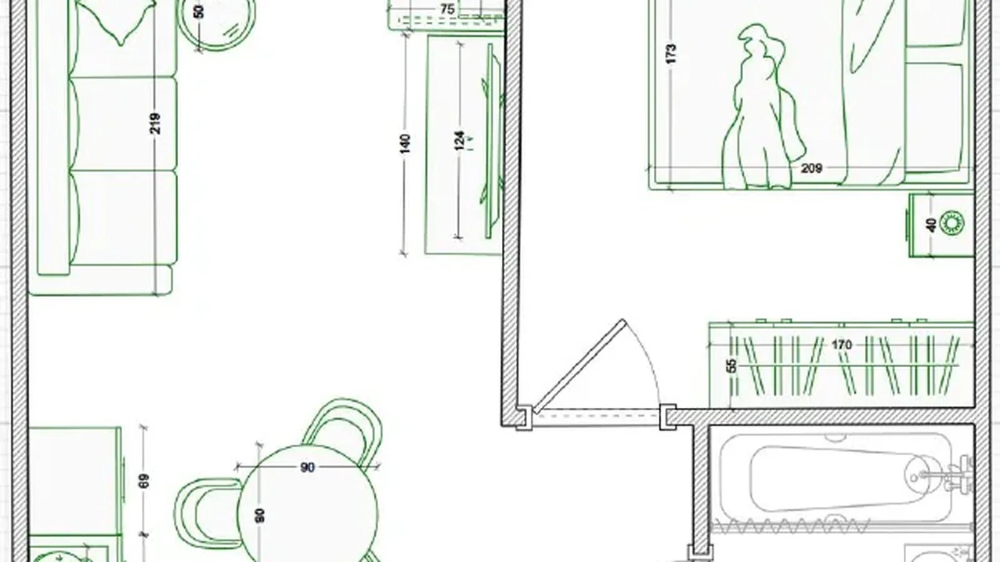

Свет, цвет и планировки
Материалы из моего канала: разборы, которые помогают не ошибиться с цветом и светом и заранее примерить интерьер на своё помещение.
-

Свет и сторона света: как окна меняют интерьер
12 марта 2025
Освещение и цветовая палитра — два ключевых элемента, которые формируют атмосферу и стиль любого интерьера.
-

Как не ошибиться с выбором цветовой концепции
19 марта 2025
Самый универсальный выбор для комнаты — нейтральные цвета в качестве основных.
-

Пять стилей спальни: от ар-деко до прованса
11 апреля 2025
Глаза разбегаются от обилия картинок в Pinterest, а как перенести это в реальность — непонятно. Пять готовых направлений, которые можно примерить.
-

Студия: диван, кровать или кровать-тахта
17 февраля 2025
Когда речь идёт о планировке студии, всегда возникает этот вопрос.
-

Три программы для планировки: Remplanner, Homestyler, Archicad
21 октября 2025
Один и тот же план студии 28,07 м², сделанный в трёх программах.
-

Планировка квартиры для аренды: кому какой формат
2025
Планировка под аренду — это не «красиво», а про то, кто будет здесь жить.
Хотите примерить дизайн на свою квартиру?
С помощью ИИ можно быстро посмотреть, как будет выглядеть ваше помещение ещё до начала ремонта — в вашем реальном пространстве.
Заказать визуализацию